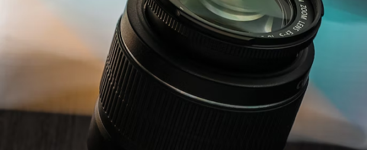

Participating in a photo contest can be a great way to showcase your photography skills and gain recognition for your work. Whether you're a seasoned pro or a beginner, these five tips can help increase your chances of taking winning photos:
-

- Know the contest rules and guidelines: Every photo contest has its own set of rules and guidelines, which can include technical specifications, subject matter, and other restrictions. Be sure to read and understand the rules before submitting your photos to avoid disqualification.
- Follow the contest theme or prompt: Most photo contests have a theme or prompt that participants must follow. Make sure your photos align with the theme or prompt to increase your chances of being noticed by the judges.
- Pay attention to lighting: Lighting is one of the most important factors in photography, and can make or break a photo. Experiment with different lighting conditions, including natural light and artificial light, to create the right mood and ambiance for your photo.
- Focus on composition: Composition is the arrangement of elements within a photo, and can greatly impact its overall effect. Experiment with different angles, perspectives, and framing techniques to create a visually interesting and dynamic photo.
- Tell a story with your photo: A great photo should tell a story or convey an emotion or message. Think about what story you want to tell with your photo, and use composition, lighting, and subject matter to bring that story to life.